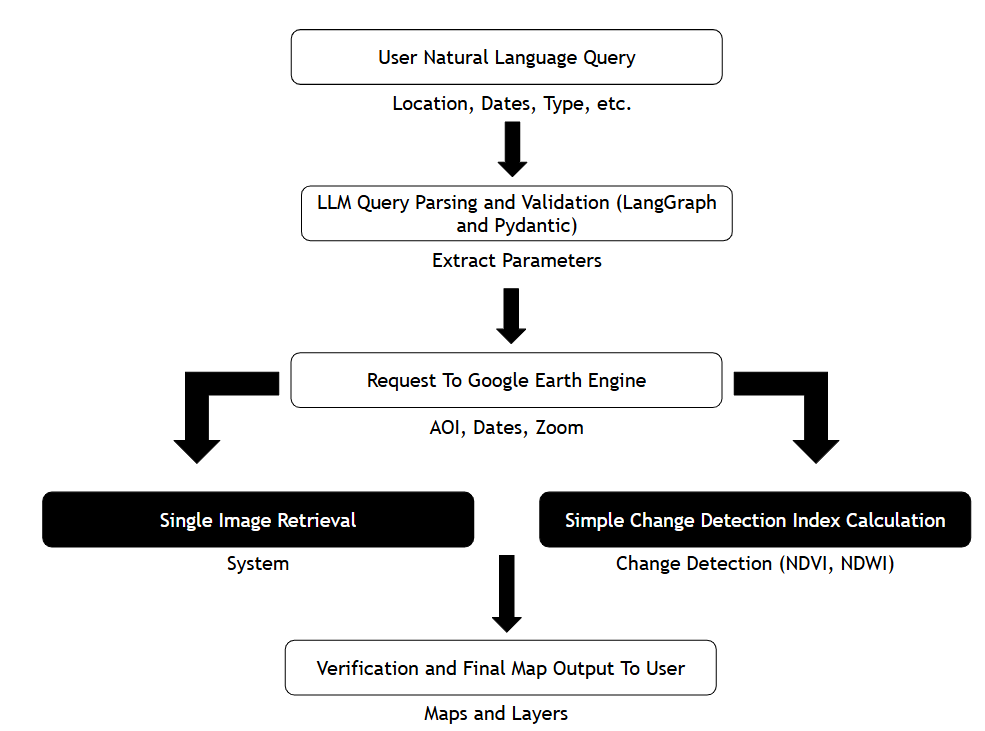
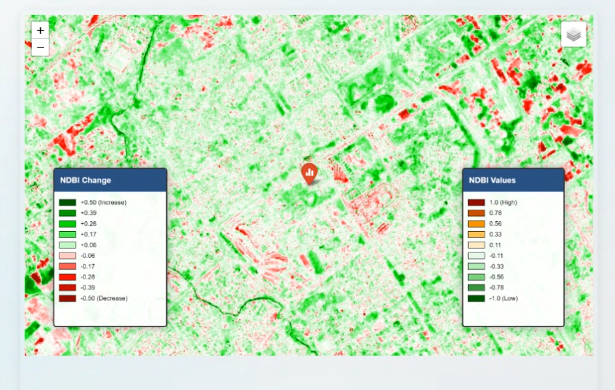
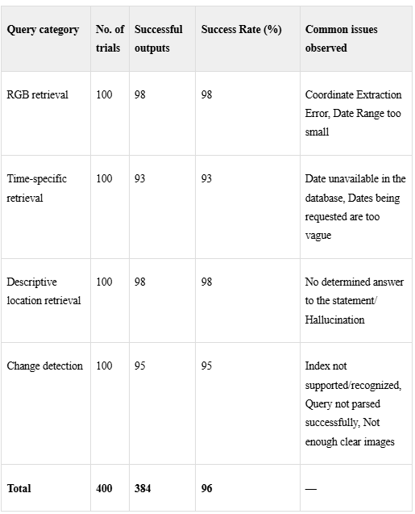
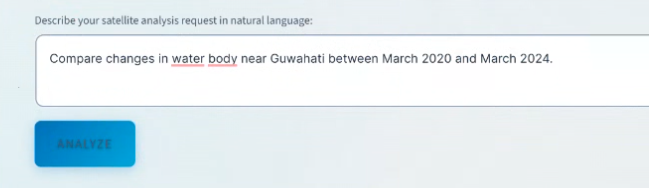

GeoAI Satellite Analysis Workflow
I worked as a research intern in the Remote Sensing Division at the Indian Space Research Organisation (ISRO), contributing to a GeoAI framework that integrates LangGraph and Google Earth Engine (GEE) to automate satellite image retrieval and generation. My work focused on a scalable pipeline that lets non-technical users access, query, and visualize satellite imagery with high accuracy.
GeoAI framework for automated satellite image retrieval
Objective
Develop a natural-language-driven system that can retrieve, process, and generate satellite imagery using AI agents, enabling faster and more accessible remote sensing workflows.
Contributions
1. Pipeline architecture and model integration
- Designed and implemented a LangGraph-based agentic workflow that interprets user queries and converts them into GEE API calls
- Used Pydantic for query parsing and parameter validation before Earth Engine requests
- Integrated multiple AI agents for query parsing, geospatial reasoning, and image generation
- Built a modular pipeline supporting single-image retrieval, change-detection indices (e.g. NDVI, NDWI), and multiple satellite datasets (Sentinel-2, Landsat-8, and others)

2. Satellite image retrieval and processing
I automated retrieval by location, date range, cloud-cover threshold, and spectral band selection, with preprocessing such as cloud masking, band normalization, and region clipping.

3. Retrieval performance evaluation
Performance was evaluated across 400 trials (100 per query category):
- RGB retrieval — 98% success (98/100); common issues: coordinate extraction errors, narrow date ranges
- Time-specific retrieval — 93% success (93/100); common issues: unavailable dates, vague date requests
- Descriptive location retrieval — 98% success (98/100); common issues: ambiguous locations, hallucinated answers
- Change detection — 95% success (95/100); common issues: unsupported indices, parse failures, insufficient clear imagery
- Overall — 96% success (384/400 successful outputs)

4. Image generation and validation
- Developed a model to generate synthetic satellite images using retrieved metadata
- Validated outputs by checking that the values used for each variable (e.g. location, date range, bands, and indices) matched the intended query
5. User-facing interface for non-technical users
- Built a natural-language interface for requesting satellite images with simple prompts
- Enabled automated responses with maps, metadata, and processed imagery
- Reduced reliance on manual GEE scripting to make remote sensing more accessible

6. Research paper contribution
- Co-authored a research paper documenting the GeoAI framework, methodology, and performance results
- Contributed sections on system architecture, model evaluation, and experimental results
Impact
- Reduced satellite image retrieval time from minutes to seconds
- Enabled non-technical users to access remote sensing data without writing code
- Demonstrated feasibility of AI-driven geospatial workflows for national-scale applications
- Provided ISRO with a scalable foundation for future GeoAI tools
Technical skills
- AI/ML: LangChain, LangGraph, LLM-based agents
- Geospatial: Google Earth Engine, remote sensing workflows
- Programming: Python, geospatial APIs, data pipelines
- Research: Paper writing, experimental design, model validation